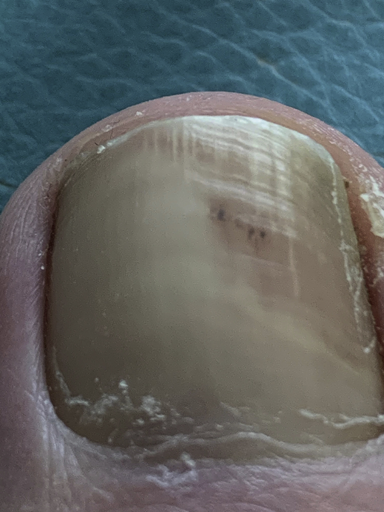
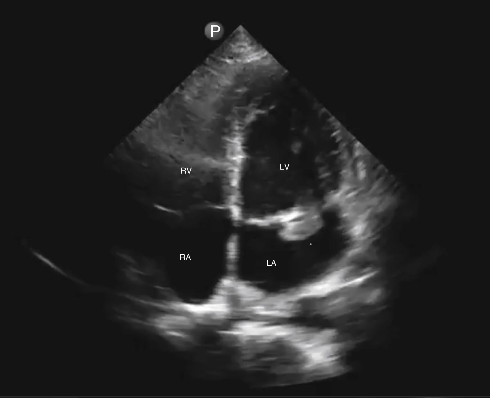
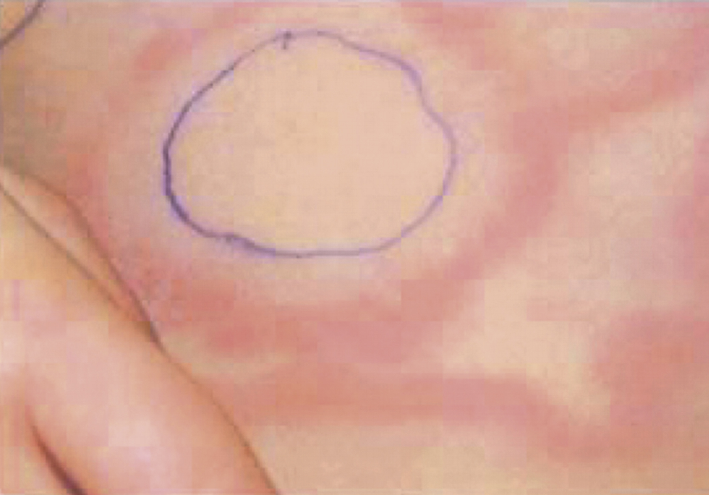
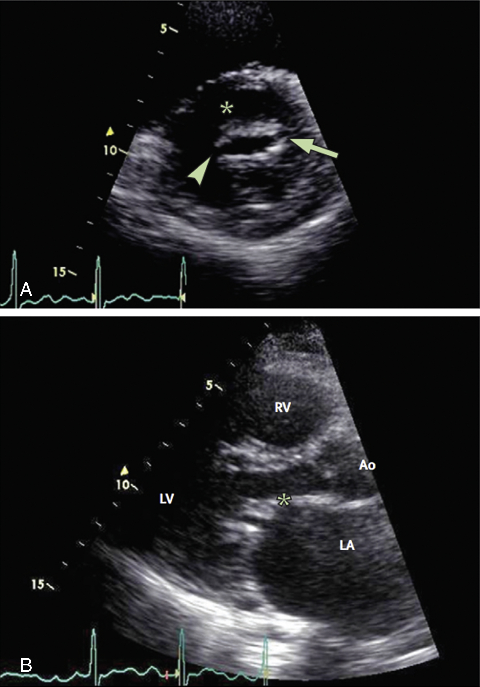
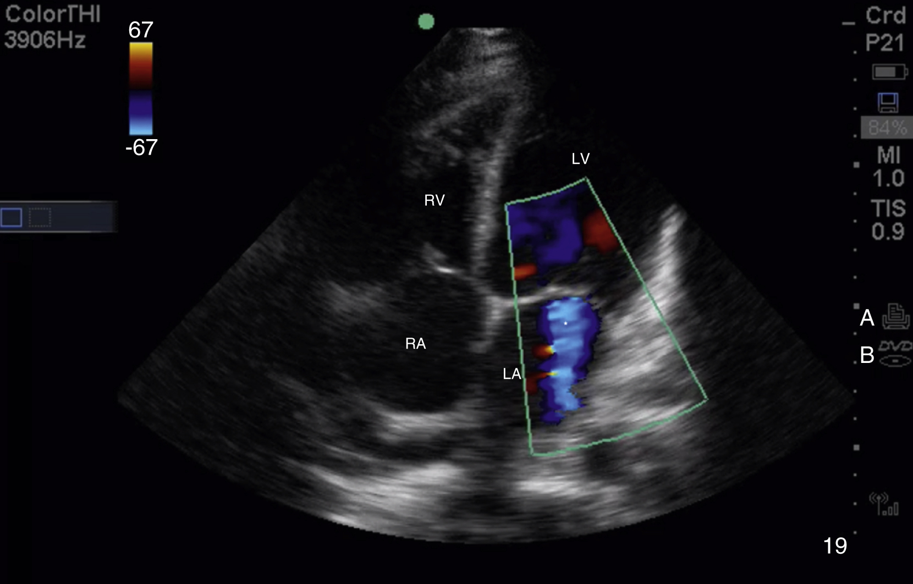
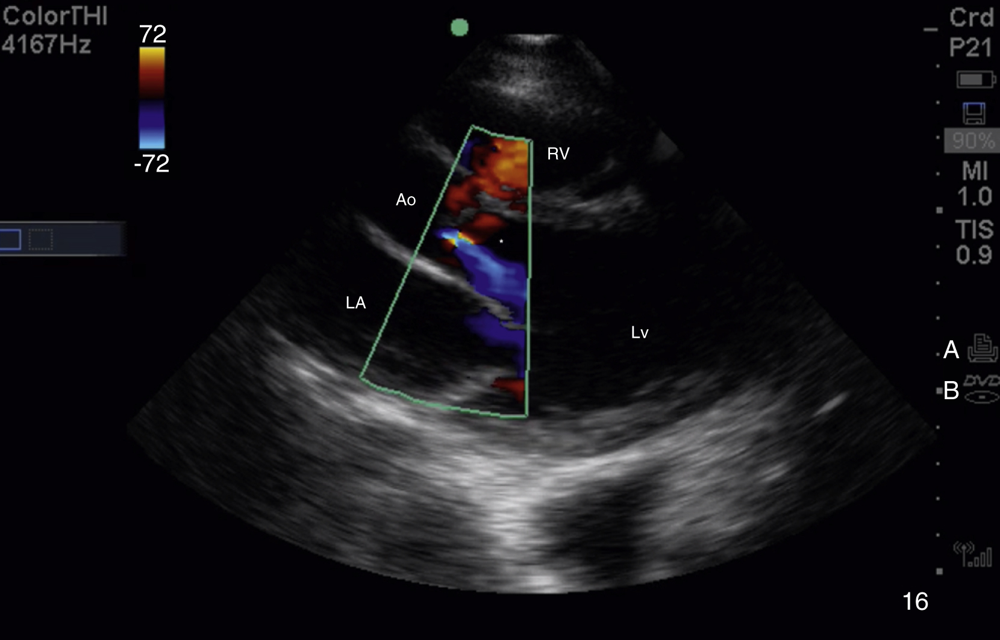

Infective endocarditis (IE) is defined as an infection of a native or prosthetic heart valve, the endocardium, or an indwelling cardiac device. While risk factors and common causative pathogens have shifted in developed countries in recent decades, IE incidence and mortality remain unchanged. IE is a disease with a highly variable and often nonspecific presentation, with the only consistent feature being fever. Early diagnosis and correct initial management remain very challenging, particularly in the emergency department (ED) setting.
Recent changes in the epidemiology of IE in industrialized countries have led to changes in disease presentation. While the overall annual incidence has changed little (9 to 15 cases/100,000), IE has increasingly become a disease of older adults, with the incidence rising dramatically in patients over age 60 and those with multiple comorbidities.1,2 The incidence of prosthetic valve, intracardiac device (pacemakers and defibrillators), and healthcare-associated infections is increasing. Up to 36% of community onset IE is healthcare-associated, occurring in nursing home residents, patients undergoing dialysis or chemotherapy, or following a recent hospitalization.1 As opioid addiction has increased in the United States, the proportion of IE cases linked to injection drug use (IDU) has risen nationwide, from 7% in 2000 to 12% in 2013, and exceeds 50% of cases in some communities.3,4
The 90-day mortality from IE averages nearly 25%. Predictors of poor outcomes include older age and presence of comorbidities, infection with Staphylococcus aureus, heart failure, and perivalvular extension.1,5 Streptococcal and isolated right-sided infections are associated with better outcomes.
Development of IE requires either predisposing valve dysfunction, endothelial damage, or prosthetic material, conditions that all lead to formation of a platelet-fibrin thrombus, which is then seeded with bacteria (Box 1). Yet, at the time of presentation, up to 50% of IE patients have no known history of predisposing structural or valvular heart disease or prosthetic device.6 Occult degenerative heart disease and bicuspid aortic valve are thought to account for many such cases. Rheumatic valvular disease, now uncommon in industrialized countries, remains a common predisposing condition in developing countries. Congenital heart disease predisposes to IE, with the highest infection risk being from cyanotic conditions and repaired lesions with residual prosthetic material, shunt, or valve regurgitation. A prior history of IE confers a high lifelong risk of recurrence, even when the source of endothelial damage remains occult.
IDU carries a high risk of IE, even in patients with normal heart valves. Injection of nonsterile illicit drugs leads to endothelial damage by a poorly understood mechanism, and the resulting thrombus can be seeded by frequent injection-related bacteremia. Though IDU-associated IE may involve any valve, it is much more likely to be right-sided than in non-IDU patients, occurring on the tricuspid valve in approximately 50% of cases.
Prosthetic heart valves and intra-cardiac device leads represent an increasingly common nidus for infection.7 In community hospital populations, prosthetic valve and cardiac device-related infections now account for roughly 15% and 5% of IE cases, respectively, with even higher proportions in tertiary care centers.1,8 Prosthetic valve endocarditis (PVE) complicates up to 6% of both bioprosthetic and mechanical valves, with an incidence of 0.3% to 1.2% per patient/year.5 The highest risk for PVE occurs during the first 6 months after surgery, and these early infections have a worse prognosis. IE associated with pacemaker and defibrillator leads may occur via hematogenous seeding or device pocket infection. It begins as a right-sided infection, usually involving the tricuspid valve.
Bacteremia is also considered requisite for the development of IE, except when contamination occurs perioperatively during valve replacement or device implantation. Poor dentition, dental procedures, and cystoscopy are classically implicated sources of bacteremia. IDU, central and long-term intravenous lines in hospitalized patients and hemodialysis all lead to frequent staphylococcal bacteremia.
The microbiology of IE in industrialized countries has shifted in recent decades, along with the changes in its epidemiology and predisposing conditions. Gram-positive organisms continue to be the leading cause of IE, but Staphylococcus species now predominate, accounting for 30% to 40% of all infections.1 S. aureus is a virulent pathogen, with a predilection for metastatic complications, particularly stroke, relatively acute infections, and high associated mortality. Methicillin-resistant Staphylococcus aureus (MRSA) now accounts for almost 15% of IE cases in the United States, and is more common in hemodialysis, IDU, and healthcare-associated infection. The skin commensal coagulase-negative Staphylococcus species, which are often methicillin-resistant and adhere well to prosthetic material, are more common in early PVE and hemodialysis-associated infection. Streptococcus species, including oral commensals belonging to the viridans group, remain the leading IE etiology in developing countries. Streptococcus bovis IE is associated with underlying gastrointestinal malignancies. Enterococcus faecalis causes both PVE and native valve infection, primarily in elderly and debilitated patients. Streptococcus and Enterococcus infections tend to cause classic, indolent, subacute endocarditis.
The remaining IE etiologies together account for about 15% of cases, and frequently produce initially negative blood cultures. The group of fastidious gram-negative bacteria, termed HACEK—Haemophilus spp., Aggregatibacter actinomycetemcomitans, Cardiobacterium hominis, Eikenella corrodens, and Kingella kingae—can often be isolated within 5 days in modern blood culture systems.9 Zoonotic etiologies include Coxiella burnetii (Q fever) and Brucella species from livestock, and Bartonella species from body lice and cats. Fungal endocarditis, mostly due to Candida and Aspergillus species, is primarily associated with prosthetic valves, IDU, and immunocompromised states.10 The above organisms are considered typical of, or consistent with, IE, and blood cultures that grow any of these are a key component of the Duke diagnostic criteria (Box 2).
The concept of subacute versus acute infection is no longer used to classify IE. Rather, IE is now classified by the type of valve and by the setting in which it is acquired. Categories include native valve versus prosthetic valve; community-associated versus healthcare-associated (which is sub-classified as nosocomial or community onset); IDU-associated; and intra-cardiac device-associated. PVE is sub-classified as early (≤12 months) or late.
Cardiac and embolic complications develop over time as the infected vegetation grows. Valve leaflet distortion and destruction leads to regurgitant flow and impaired cardiac function. Aortic valve involvement carries the highest risk of clinical heart failure from acute aortic insufficiency. Bacterial invasion of the myocardium can lead to abscess formation and conduction blocks. Friable, infected material can embolize from left-sided vegetations, causing downstream tissue infarction, metastatic abscess, mycotic aneurysm, or immune complex deposition. The cerebral circulation is the most frequent site of large vessel embolization, and hemorrhagic transformation of the infarct is common. Right-sided endocarditis produces septic pulmonary emboli.
Symptoms of IE are nonspecific and diverse (Box 3). Patients often appear relatively well. However, depending on host factors, location of the vegetation, and microbial virulence, some present acutely ill with sepsis and multi-organ failure. The most common symptom is fever (90%). The list of additional possible symptoms includes chills, malaise, weight loss, cough, dyspnea, chest pain, headache, myalgias, arthritis, back or neck pain, altered mental status, or a focal neurologic complaint. A measured fever is present in the ED in about 80% of patients with IE. Since a new murmur, or worsening of a preexisting murmur, is present in only 68% of patients, often no murmur will be heard in the ED. In approximately 30% of cases, the primary presenting syndrome represents a complication of IE, including acute heart failure, stroke, septic pulmonary emboli, and vertebral osteomyelitis.5
With such a broad range of possible presentations, IE can easily be mistaken for another infection, such as a viral syndrome, meningitis, or pneumonia, particularly common with right-sided IE and septic pulmonary emboli. It can also present similarly to a non-infectious problem, such as acute coronary syndrome, primary heart failure, or stroke. In these cases, fever may be the key sign prompting consideration of IE.
The most important clue to the diagnosis of IE is the presence of a predisposing condition (see Box 1). If IE is suspected, a core temperature should be correctly measured to assess for fever, multiple times if necessary, and a particularly careful cardiac auscultatory exam performed. Peripheral embolic and vasculitic stigmata should be sought (see Box 2), although each is found in only about 5% of cases, with splinter hemorrhages being the most commonly seen (Fig. 1).
Findings on standard laboratory tests in IE are nonspecific. Clinicians must consider IE when faced with a constellation of suggestive findings rather than looking for a single definitive test. Normocytic anemia and hematuria and proteinuria, suggesting glomerulonephritis, are classic findings in indolent infections. An elevated erythrocyte sedimentation rate and C-reactive protein are expected in roughly 60% of cases. A chest x-ray may show signs of heart failure or septic pulmonary emboli, and an electrocardiogram (ECG) may display conduction abnormalities related to a myocardial abscess.
When IE is suspected, it is the responsibility of the emergency clinician to ensure that blood cultures are obtained prior to administering antibiotics. Blood culture results are key to both definitive diagnosis and tailored antimicrobial therapy. At least two sets, each containing 10 cc of blood, should be drawn from separate sites and, if possible, separated in time by at least one hour. Three sets of blood cultures are required in suspected PVE or cardiac device-related infection because one of the most common pathogens in prosthetic device infections, coagulase-negative S. aureus , is also the most common blood culture contaminant.
Echocardiography is the other key diagnostic test in IE. Transthoracic echocardiography (TTE) should be performed as soon as possible whenever IE is suspected. While the diagnostic sensitivity of TTE for one of the definitive endocardial findings of IE (see Box 2) is no more than 70%, its specificity is very high. Hence, this noninvasive test stands to make the correct diagnosis very rapidly while the patient is still in the ED. More importantly, echocardiography can identify endocardial complications that may require urgent surgery, including acute valvular insufficiency or perforation with heart failure, perivalvular extension, prosthetic valve dehiscence, and vegetation size greater than 10 mm, which presents an elevated embolic risk (Box 4).5,11 The sensitivity of transesophageal echocardiography (TEE) is significantly higher than that of TTE, both for identifying vegetations and assessing for complications, particularly in PVE.
TEE is now recommended after TTE in all cases, though this invasive modality will usually be performed after hospital admission. The value of point of care TTE, performed immediately by experienced emergency clinicians in the setting of suspected IE, has been demonstrated in numerous case reports, although its role has yet to be evaluated in a large study (Fig. 2).12
Additional advanced imaging in patients with suspected IE should generally be driven by symptoms. Some advocate routine brain magnetic resonance imaging (MRI) in uncertain cases, even without neurological symptoms, because asymptomatic cerebral emboli are found in up to 60% of those with left-sided infection, and this finding constitutes a Duke minor criteria.
In the sickest subset of IE patients, ED management begins with stabilization, including evidence-based therapy for sepsis, hemodynamic support, and positive pressure ventilation. Patients with suspected IE and acute heart failure require immediate consultation by a cardiothoracic surgeon, and emergency clinicians need to be aware of additional echocardiographic findings that are indications for surgical therapy (see Box 4). In general, there has been a shift toward earlier surgical treatment in IE, with approximately one-half of patients with left-sided infection undergoing surgery during the index admission.9 If possible, patients with left-sided IE should be managed by a multidisciplinary team at a center capable of cardiothoracic surgery.
In the ED, initial antimicrobial treatment of IE is almost always empiric. Occasionally, patients present because previously drawn blood cultures have returned positive; in such cases, isolate susceptibility-directed antibiotics should be selected in consultation with an infectious disease specialist. Consensus guidelines on IE treatment tend to focus on pathogen-specific therapy, with limited discussion or recommendations regarding empiric treatment.5,13 Patient characteristics to consider in choosing the empiric regimen include whether there is a prosthetic valve, history of IDU, or recent health care exposure, as well as disease severity. If available, hospital-specific empiric treatment recommendations, which account for local susceptibility patterns and are updated regularly, supersede published guidelines, which are updated infrequently.
In most cases, empiric therapy in the ED should include vancomycin (20 to 35 mg/kg actual body weight loading dose, then 15 to 20 mg/kg every 8 to 12 hours not to exceed 3000 mg). Vancomycin alone for one or two doses is a reasonable approach for native valve and prosthetic valve infection and in IDUs. Addition of ceftriaxone (2 g/day) can be considered to cover HACEK and other gram-negative organisms, responsible for less than 6% of infections.1,5 As soon as blood culture results return, pathogen and susceptibility-directed therapy is selected by an infectious disease specialist. Because of the complex pathology of bacterial growth within vegetations, 4 to 6 weeks of parenteral antibiotic therapy is generally required to eliminate infection. For selected stable patients who respond well to initial therapy in the hospital, IV treatment can be completed as an outpatient. Protocols that include partial oral therapy have recently proven effective and safe.14
All patients with suspected IE, in whom blood culture results are pending, should be hospitalized. Increasingly, for selected stable patients who respond well to initial treatment in the hospital, IV antibiotic therapy can be completed at home.
The American Heart Association and European Society of Cardiology recommend antibiotic prophylaxis to prevent IE for individuals with very high-risk predisposing conditions before undergoing procedures that produce heavy bacteremia with potential IE pathogens. These primarily consist of dental procedures. High-risk predisposing conditions include a prior history of IE, certain forms of congenital heart disease (see previous) and the presence of a prosthetic valve. This issue is of limited relevance to emergency practice, since most commonly performed ED procedures do not produce the kind of bacteremia that requires prophylaxis—including local anesthesia injection into uninfected tissue, laceration repair, endotracheal intubation, and foley catheter placement in the absence of infection. Prophylaxis should be administered prior to cutaneous abscess drainage, however. A reasonable approach is to administer IV vancomycin (15 mg/kg) one hour before incision and drainage.
From 1920 to 1950, acute rheumatic fever (ARF) was the leading cause of death in United States children and the most common cause of heart disease in individuals younger than age 40 years. During the 1960s and 1970s, the incidence of ARF in the United States and other developed countries declined dramatically because of widespread antibiotic treatment of streptococcal infections, the declining prevalence of the more virulent strains of group A streptococci, and improved hygiene and living conditions. In many developing nations, however, ARF continues to be a leading cause of childhood mortality. Children 4 to 9 years of age remain at greatest risk, with an annual incidence of ARF of 2 to 14 cases/100,000. Chronic rheumatic heart disease (RHD), a consequence of ARF, peaks in adults between the ages of 25 and 34 years. There are an estimated 34 million people worldwide living with RHD.15
ARF is a delayed nonsuppurative complication of streptococcal pharyngitis. ARF is thought to result from an exaggerated immunologic response to group A beta-hemolytic streptococci—antibodies cross-reacting with tissues in the heart, joints, skin, and central nervous system. Patients with a history of ARF are predisposed to recurrent Strep infections, and repeated infections lead to progressive heart damage.
ARF occurs 1 to 5 weeks after the initial bout of pharyngitis. Up to one-third of patients with documented ARF do not remember having had pharyngitis in the preceding month. Fever is generally present during the acute phase of rheumatic fever, rarely lasting more than 2 weeks. Additional manifestations include arthritis, carditis, chorea, subcutaneous nodules, and erythema marginatum (see Box 4).
A syndrome of mono- or poly-articular arthralgias and arthritis is the most common finding in ARF. Arthritis tends to occur early in the course of ARF and often coincides with a rising titer of streptococcal antibodies. It classically affects large joints, such as the knee, ankle, elbow, and wrist. The pain may be more severe than physical findings suggest (severe arthralgias). Synovial fluid analysis generally reveals a sterile inflammatory fluid.
Cardiac manifestations of ARF may be subtle and can include symptoms and signs of pericarditis, myocarditis, and endocarditis. The mitral valve is the most commonly affected, causing acute mitral regurgitation (MR). Inflammation of the valvular endocardium may result in permanent deformity and impairment of one or more valves over the course of decades. Stenotic lesions of the mitral and/or aortic valve are common late manifestations of RHD (Fig. 3).
Chorea is a random, rapid, purposeless movement, usually of the upper extremities and face. Chorea is a relatively rare manifestation of ARF that tends to emerge after a long latency period. Subcutaneous nodules and erythema marginatum are found in fewer than 10% of cases of ARF. Their presence, however, should suggest the diagnosis. Subcutaneous nodules are pea-sized and nontender. They typically appear over the extensor surfaces of the wrists, elbows, knees and, occasionally, the spine. Erythema marginatum is a nonpruritic, painless, evanescent ring of erythema that commonly appears on the trunk and proximal extremities (see Fig. 3).
Diagnosis of ARF is clinical, based on the presence of the characteristic manifestations plus evidence of antecedent streptococcal infection. In 1944, Jones formulated major and minor criteria for the diagnosis of ARF, which, in revised form, remain the basis for making the diagnosis (Box 5).16 Throat cultures are usually negative at the time of clinical onset of ARF, but antistreptolysin antibody titers remain positive for 4 to 6 weeks from the time of infection. The erythrocyte sedimentation rate and C-reactive protein levels are typically elevated, and a prolonged PR interval is common and suggestive in ARF.
All patients with ARF should receive antibiotic therapy, regardless of the clinical history of pharyngitis. Penicillin can be administered orally (250 mg for patients less than 28 kg, 500 mg for patients 28 kg and above, BID or TID for 10 days) or intramuscularly (600,000 units of penicillin B for patients less than 28 kg, 1.2 million units for patients 28 kg and above, as a one-time dose).
Treatment for arthritis consists of anti-inflammatory agents, usually aspirin, administered until symptoms resolve and the erythrocyte sedimentation rate and C-reactive protein concentration normalize. Patients with severe carditis are often treated with corticosteroids, but no evidence supports this treatment. Patients with congestive heart failure should be managed accordingly. Treatment is aimed at symptom relief and unfortunately does not decrease the likelihood of progression to RHD. Primary prevention involves treating those with group A streptococcal pharyngitis within nine days of the onset of symptoms, which decreases the risk of ARF. Following ARF, patients should receive prophylactic antibiotics (generally, penicillin) for up to 10 years, depending on the severity of carditis, to prevent recurrences.
There are four heart valves, three of which (tricuspid, pulmonic and aortic) are tricuspid, while the mitral valve is bicuspid. Each cusp is formed from a double layer of endocardium attached at its base to the fibrous skeleton of the heart. For the tricuspid and mitral valves, muscular projections from the ventricles (papillary muscles) merge with tendinous cords (chordae tendineae) which extend from the edges of the cusps. Contraction of the ventricle leads to contraction of the papillary muscles, resulting in the opening or closing of the valve.
The most common cause of mitral stenosis (MS) worldwide is RHD, a decades-delayed complication of ARF and carditis of the mitral valve. In the developed world, mitral annular calcification leading to degenerative valvular disease in the elderly is the most common etiology of MS.17 Though uncommon, MS can also be a congenital condition.
The normal cross-sectional area of the mitral valve orifice is 4 to 6 cm2 . Stenosis becomes clinically significant when the area decreases to below 1.5 cm2 , or 1 cm2 /m2 body surface area in larger patients. As the valve narrows, impeded inflow from the left atrium to the left ventricle results in decreased preload, decreased cardiac output, left atrial hypertension and, ultimately, pulmonary congestion. As the disease progresses, patients may develop pulmonary hypertension, right ventricular hypertrophy, and right ventricular failure.
The most common complication of MS is atrial fibrillation due to left atrial dilation. Atrial fibrillation leads to decreased atrial contraction and decreased diastolic filling with subsequently decreased cardiac output. Patients with underlying MS may also decompensate in the setting of pregnancy, anemia, infection, and hyperthyroidism, conditions that increase cardiac demand and decrease ventricular filling. Finally, right ventricular failure may cause left ventricular dysfunction due to chronic preload reduction and impaired contractility over time.
Early symptoms of MS include decreased exercise tolerance and dyspnea on exertion. Patients with more advanced disease may have orthopnea and peripheral edema. Embolic events from atrial fibrillation may be the initial presenting feature. Hemoptysis from rupture of a bronchial vein, and hoarseness, caused by compression of the recurrent laryngeal nerve, are classic but uncommon presentations. Chest pain or discomfort is not a typical feature of MS.
Aside from the typical signs of heart failure, findings that suggest the presence of MS include a loud S1 and an opening snap in early diastole, accompanied by a low-pitched, rumbling, decrescendo diastolic murmur, best heard at the apex.
The chest x-ray may be normal, or cephalization of pulmonary vascular flow or pulmonary vascular congestion may be observed. Left atrial enlargement may be suggested by straightening of the left heart border in more advanced cases. ECG may demonstrate atrial fibrillation along with signs of left atrial enlargement or right ventricular hypertrophy. Echocardiography is the preferred method of diagnosis and assessment of disease severity 18,19 (Fig. 4). TTE is often sufficient for routine care,20 however TEE typically provides more detailed information on valve morphology and evaluates for concomitant left atrial thrombus.
Acute stabilization in the ED begins with identification and treatment of underlying precipitants, such as anemia or infection. Symptoms of vascular congestion (pulmonary and peripheral) are treated with diuresis. Rate control and anticoagulation are important if secondary atrial fibrillation is present. With long term medical management alone, 5-year survival rates with MS are 47%.21
Definitive surgical interventions include percutaneous and open approaches. Symptomatic severe MS is most commonly treated with percutaneous transvenous mitral commissurotomy, also known as percutaneous balloon valvulotomy, when valve anatomy is favorable, and when there is an absence of left atrial thrombus and moderate-severe regurgitation.18,19 Surgical mitral valve replacement is considered based on surgical expertise, specific valve characteristics and patient comorbidities.
MR is the most prevalent valvular disease worldwide.22 Primary MR is caused by degenerative disease, RHD, IE, mitral valve prolapse (MVP) in connective tissue disease, and acute papillary muscle rupture, all leading to direct dysfunction of the valve leaflets or support structures (the annulus, chordae or papillary muscles) themselves. Secondary MR is caused by left ventricular enlargement and remodeling due to coronary artery disease or other cardiomyopathy, which over time distorts the architecture of the support structures and leads to secondary valve dysfunction.
MR causes retrograde flow of blood from the left ventricle to the left atrium during systole. Pathophysiology differs between acute and chronic presentations. Acute MR, as results from papillary muscle rupture secondary to myocardial infarction, is characterized by a sudden decrease in afterload, low left atrial compliance and sharply elevated left atrial pressure, resulting in acute pulmonary vascular congestion. Chronic MR, as results from cardiomyopathy, is characterized by stable afterload in the setting of cardiac remodeling, progressively increased left atrial compliance and near-normal left atrial pressures, resulting in preserved cardiac output—until the point at which decompensation ensues. Acute MR is a true cardiac emergency, whereas chronic MR may be occult and go undetected for many years.
Acute MR presents as severe dyspnea, acute pulmonary edema, or cardiogenic shock, typically in a patient with no prior history of heart failure. Classically a harsh, high pitched midsystolic murmur can be heard, loudest at the apex. Radiation is usually to the axilla but depends on the direction of the regurgitant jet. In severe acute MR, there may be an S3 and a short diastolic rumble.
The chest x-ray usually demonstrates unilateral or bilateral pulmonary edema. The ECG may show signs of ischemia or infarction, including Q waves, ST-T changes and left bundle branch morphology. ED point of care TTE establishes a cardiogenic cause of acute dyspnea with high sensitivity/specificity,23 and experienced ED sonographers can identify an MR jet (Fig. 5). Comprehensive echo will identify the incompetent valve, regurgitant flow, and papillary muscle rupture, if present, in addition to decompensated heart failure.
The presentation of chronic MR is similar to that of chronic systolic heart failure, with clinical symptoms and signs of vascular congestion. The chronic MR murmur is classically described as holosystolic, heard best at the apex and radiating to the axilla. There may be a S3 present.
The chest radiograph may suggest left atrial enlargement. Atrial fibrillation is common, and the ECG often demonstrates left atrial and ventricular hypertrophy. Echocardiography may show a normal or above-normal ejection fraction, but some portion of systolic flow is retrograde. TEE is the preferred diagnostic modality to evaluate valve anatomy and size and direction of the regurgitant jet. Increasingly, 3D TEE is being used to grade disease severity and guide valve replacement.24
When the diagnosis of acute MR is suspected, emergency echocardiography and right heart cardiac catheterization should be pursued to assess the degree of regurgitation and urgency for surgery. Initial stabilization in the ED includes treatment of pulmonary edema with intravenous nitrates, diuretics and noninvasive positive pressure ventilation (CPAP or BiPAP). Norepinephrine is the first-line vasopressor for hypotensive patients, and once the blood pressure is supported with a mean arterial pressure of at least 65 mm Hg, inotropic support with dobutamine can be added for patients with persistent hypoperfusion. In a persistently hypotensive patient who does not respond to vasopressor and inotropic therapy, an intraaortic balloon pump (IABP) may stabilize the patient and provide a bridge to valve replacement surgery. A small subset of patients may improve and stabilize without surgical intervention, however rates of secondary pulmonary hypertension in this population are high. In cases of acute MR from inferolateral myocardial infarction, coronary artery revascularization can lead to complete resolution of MR.
Chronic symptomatic MR is managed with afterload reducing agents angiotensin-converting enzyme [ACE] inhibitors and angiotensin II receptor blockers [ARB], and beta blocking agents are first-line therapy), and diuretics to prevent progression of left ventricular (LV) failure.19 A long period of medical therapy and annual echocardiographic monitoring is the norm, with 15-year survival approaching 70% with medical therapy alone. Once the left ventricular ejection fraction (LVEF) falls below 60%, valve repair or replacement is recommended to avoid irreversible left ventricular dysfunction. Open valve repair or replacement remains the surgical treatment of choice in most cases. Recent studies support the use of transcutaneous mitral valve repair (MitraClip) for carefully selected patients with primary MR.19
MVP is a form of abnormal mitral valve leaflet movement during systole. It may be inherited or sporadic. Epidemiological studies report a prevalence of approximately 2% to 3% worldwide.25 While usually a benign condition, MVP can result in MR and rarely other complications.
MVP is characterized by myxomatous proliferation of the middle spongiosa layer of the valve leaflet, resulting in abnormal billowing of one or both leaflets into the left atrium during systole. MVP is usually an isolated primary disorder, but may be associated with connective tissue disorders, particularly Marfan and Ehlers-Danlos syndromes. Most patients with MVP have no or mild MR, however severe MR occurs in up to 10% of patients with MVP.26 The most frequent complications of MVP are progressive MR (resulting in need for valve replacement), atrial fibrillation, heart failure and endocarditis.
MVP is associated with a wide variety of clinical symptoms, from asymptomatic to palpitations, chest pain, dyspnea, lightheadedness, fatigue, and anxiety. A midsystolic click may be heard, caused by snapping of the chordae tendineae with prolapse of the valve. Occasionally a mid to late systolic murmur can be heard over the left lower sternal border. Echocardiography is the primary diagnostic modality.
Patients with MVP should be reassured about the typically benign natural history of the disease. Beta-blockers may be used to control symptoms such as palpitations, chest pain, and anxiety. Lifestyle modifications, such as exercise, relaxation techniques, and avoidance of ethanol, caffeine, and other stimulants may also be helpful.
The most common cause of aortic stenosis is calcific degeneration, which is prevalent in older adults with atherosclerotic disease. Aortic stenosis also occurs in younger individuals with a bicuspid aortic valve and calcific changes. RHD can lead to atrial stenosis (AS), in which case it may coexist with MS.
The normal aortic valve area (AVA) is approximately 3 to 4 cm2. Stenosis occurs through an active process of calcification, inflammation, oxidative stress and remodeling. Clinically significant obstruction of outflow from the left ventricle occurs when the AVA decreases by more than 50%.27 As the valve narrows, increased left ventricular afterload leads to compensatory left ventricular hypertrophy (LVH) to maintain cardiac output. Left ventricular hypertrophy and increased wall tension predispose the patient to cardiac ischemia, even in the absence of significant coronary artery disease. Further progression of disease is associated with left ventricular dysfunction, left atrial enlargement, and atrial fibrillation. In advanced stages, cardiac output decreases while left atrial and pulmonary artery pressures increase, leading to pulmonary hypertension and right heart failure.
Severe aortic stenosis is defined by a peak velocity of ≥4 m/s, a mean pressure gradient (MPG) of ≥40 mm Hg, or a valve area of less than 1 cm2.18 Up to one-third of patients with severe AS have a preserved ejection fraction.28 Individuals with severe AS are preload-dependent and have very little cardiovascular reserve. Any disruption of the delicate balance between myocardial oxygen supply and demand (e.g., rapid atrial fibrillation, dehydration, acute blood loss) can result in acute decompensation.
AS is most commonly diagnosed incidentally on routine physical exam, or on echocardiography as part of a broader cardiology work-up. Symptomatic AS gradually progresses from fatigue, exertional dyspnea, and angina to lightheadedness and exertional syncope, to overt heart failure. In an older patient with chest pain who appears preload dependent in the ED, the possibility of AS, with or without coronary artery disease, should be considered. In addition to the gradual progression of symptoms, patients may also experience acute decompensation due to triggers such as sepsis, anemia, or endocarditis.
The classic AS murmur is a crescendo-decrescendo systolic murmur, heard best at the right upper sternal border, radiating into the carotids. An S4 gallop may be present at the apex. As the severity of disease increases, the murmur peaks later and becomes less audible. Carotid pulses may be delayed (tardus) and diminished in intensity (parvus).
The chest radiograph is frequently normal except in cases of acute decompensation. In elderly patients with calcific degeneration, valve calcification may be visible and is often associated with a tortuous aorta. ECG typically reveals LVH. Evidence of left atrial enlargement, left axis deviation, left bundle branch block, and atrial fibrillation (in the late stage) may also be present. Echocardiography is the main modality used to diagnose AS and stage severity and can be reliably done in the ED setting.23,29 AS severity is categorized using three echocardiographic parameters: aortic peak jet velocity (PVel), MPG, and calculated AVA.18
The natural history of AS is one of slow asymptomatic progression over years to decades. If identified during this latent phase, AS can be managed medically or surgically based on patient preference. Antihypertensives are the only medical therapy recommended by the current American and European guidelines.27 Statins may slow the rate of aortic calcification, but do not affect the rate of valve narrowing. Once symptoms develop, medical management has a limited role, and survival is markedly reduced unless the valve is replaced. The choice of surgical aortic valve replacement (SAVR) versus transcatheter aortic valve replacement (TAVR) is based on multiple factors, including surgical risk, patient frailty and comorbidity, and patient preference.30 In high-risk patients, balloon valvuloplasty is feasible and safe as a bridge to valve replacement, but long-term survival is poor with valvuloplasty alone.31
In the ED setting, management of decompensated AS includes judicious fluid resuscitation, blood transfusion and restoration of sinus rhythm, if indicated. Vasodilators, diuretics and inotropic agents should be avoided, if possible. When required, first-line vasopressor support is with phenylephrine or norepinephrine. When there is no response to medical therapy and the patient is a candidate for valve replacement, an IABP may provide a bridge to surgery.
Aortic regurgitation (AR) can be caused by disease of the aortic valve leaflets, or by distortion of the anatomy of the aortic root and ascending aorta. Aortic valve leaflet abnormalities are caused by calcific degeneration, a congenital bicuspid valve, infectious endocarditis, or RHD. Processes that affect the aortic root include idiopathic root dilation (ectasia), connective tissue disorders, syphilis, aortic aneurysm and aortic dissection. AR has an estimated prevalence of 4.9% in the Framingham data, with moderate or severe AR found in 0.5%.32
In acute AR, sudden development of AR leads to increased left ventricular end-diastolic pressure, reduced cardiac output, and subsequent acute pulmonary vascular congestion. In contrast, in chronic AR, progressive left ventricle remodeling and dilation allows the heart to maintain near-normal cardiac output despite significant regurgitation. The increased LV volume leads to increased stroke volume, allowing for the maintenance of cardiac output despite regurgitation.
The clinical presentations of acute and chronic AR are clinically distinct.
Patients with acute AR can present with severe respiratory distress and cardiogenic shock, due to rapidly increased end-diastolic volume in the setting of low left ventricular compliance and acute pulmonary vascular congestion.
Patients are typically tachycardic, hypotensive, and hypoxic. The pulse pressure may be normal or only slightly widened. A short, soft, diastolic murmur may be present, but often is difficult to detect in the ED setting.
Chest x-ray may show pulmonary vascular congestion. The ECG is typically normal, but may show signs of demand ischemia. Emergent echocardiography is required to confirm the diagnosis. Point-of-care ultrasound in the ED using a parasternal long (PSL) axis view can rapidly identify valve failure using color doppler over the valve area to observe the regurgitant jet (Fig. 6).23 The PSL axis view may also demonstrate a dilated aortic outflow tract suggesting a problem with the aortic root, and the apical four-chamber view may demonstrate a vegetation suggesting endocarditis as the primary etiology (see Fig. 2). Additionally, the suprasternal notch view is easily and rapidly obtainable view of the thoracic aorta which allows accurate visualization of a dissection flap if present.33
Chronic AF tends to have a prolonged asymptomatic period, after which a patient develops dyspnea on exertion due to increased LV end-diastolic pressures and anginal symptoms due to decreased aortic diastolic pressure and increased oxygen demand.
Chronic AR is characterized by a wide pulse pressure. The point of maximal impulse is typically displaced and sustained. A high-pitched, blowing, diastolic murmur at the left lower sternal border is usually present. Classic physical findings of severe AR include a rapidly rising and falling carotid pulse (water hammer, or Corrigan’s, pulse), head bobbing due to exaggerated carotid pulsations (Musset’s sign), spontaneous nail bed pulsations (Quincke’s sign), or a bruit over the femoral artery (Duroziez’s sign). An Austin-Flint murmur—a soft mid-diastolic rumble caused by a regurgitant stream against the anterior leaflet of the mitral valve—may also be present when auscultating the apex.
The chest radiograph may show cardiomegaly, and pulmonary vascular congestion in advanced or decompensated AR. The ECG usually demonstrates LVH. Echocardiography provides a definitive diagnosis, and is used to evaluate valve anatomy, and aortic root and ascending aortic dimensions, as well as LV size and function. Echocardiography can also determine the feasibility of valve or root repair.
Acute AR is a surgical emergency necessitating urgent valve replacement, along with repair of any underlying aortic root pathology. Medical stabilization involves the cautious use of short-acting vasodilators (nitroprusside, nicardipine, or clevidipine) and diuretics. Use of an IABP is contraindicated in the setting of an incompetent aortic valve. Often, diagnosis and management of the underlying aortic dissection or IE must be undertaken simultaneously. For aortic dissection complicated by AR, beta-blocker therapy should be used with caution.
Chronic AR is managed like other types of decompensated heart failure, with emphasis on diuresis, as well as preload and afterload reduction, to prevent worsening left ventricular function and avoid aortic complications if an aneurysm is present. Ideally, valve repair or replacement should be performed before the development of left ventricular systolic dysfunction. Chronic severe AR has a yearly mortality of 10% to 20% without surgical treatment.
Prosthetic heart valves may be mechanical or biologic. Biologic valves include whole valve transplants (human or porcine) as well as bioprosthetic valves, typically manufactured from bovine pericardium. All prosthetic heart valves are associated with complications, ranging from structural failure and thrombosis to systemic embolization, hemolysis, and endocarditis (Box 6). In the acute setting, the diagnosis of a prosthetic valve complication can be challenging because symptoms and signs are often subtle.
Primary structural failure is extremely uncommon with modern mechanical valves. When it does occur, the presentation is one of acute severe regurgitation and shock, and emergent valve replacement is required. With biologic valves, structural failure is more common but less dramatic. At 10 years, 20% to 30% of bioprosthetic valves exhibit some evidence of structural failure, and most are replaced electively. Symptoms are characteristically insidious in onset and are similar to those of native valvular disease.
Prosthetic valve thrombosis occurs with both mechanical and biologic valves. When appropriately anticoagulated, mechanical valves have thrombotic complications at a similar rate (∼2%/year) as biologic valves. Patient compliance with oral anticoagulation therapy therefore is an important consideration when evaluating for thrombotic and embolic complications. Symptoms of prosthetic valve thrombosis are generally subacute and may have characteristics of stenotic disease, regurgitant disease, or both. On physical examination, the diagnosis is suggested by a decreased or absent valve click, new regurgitant murmur, or louder than expected stenotic murmur. Echocardiography may demonstrate the thrombus or restricted leaflet motion. Treatment options include fibrinolytic therapy and surgery.
The incidence of systemic embolization from a prosthetic valve is approximately 1%/year. Compared with aortic valve prostheses, mitral valve prostheses are associated with twice the risk of systemic embolization, with rates roughly equal for an appropriately anticoagulated mechanical mitral valve and a bioprosthetic valve. The vast majority of diagnosed embolic events (85%) involve the central nervous system and roughly 50% of these result in permanent impairment.
Mild hemolytic anemia resulting from sheer forces across the prosthetic valve is common but usually subclinical. In more severe cases, presenting features include dyspnea, fatigue, and even jaundice. Iron replacement is effective therapy for most patients but transfusion may be required. Worsening hemolysis may be the result of a new periprosthetic leak or other structural failure, which should be evaluated by echocardiography.
The incidence of PVE is highest during the initial months after surgery and is similar for mechanical and bioprosthetic valves. Early PVE, within 60 days of surgery, is presumed to be caused by a pathogen acquired perioperatively and is associated with relatively high morbidity and mortality, whereas late PVE is more likely due to transient bacteremia and generally has a better prognosis. As with other forms of IE, fever is the most common symptom and systemic embolization is a common presentation. A normal TTE does not rule out PVE, and a TEE is generally required for diagnosis and complete evaluation of the valve. Three sets of blood cultures are recommended to evaluate for PVE. The ED diagnosis of PVE is usually presumptive because definitive diagnosis requires positive blood cultures. Vancomycin is a reasonable initial empiric antibiotic choice, although gentamicin and rifampin are often added for definitive therapy in Staphylococcal PVE. Early consultation with both an infectious disease specialist and cardiothoracic surgeon should be obtained, and transfer to a center with cardiothoracic surgical capabilities should be considered.
Patients with acute symptoms related to valvular heart disease should be admitted to the hospital until their condition has stabilized and the cause for their decompensation has been addressed. For patients with stable valvular disease, outpatient cardiology follow-up is recommended.